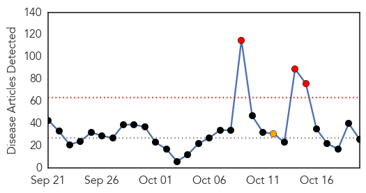
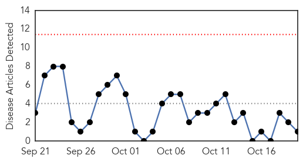
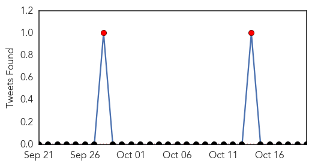

Ebola
30-Day Web Trend
3 alerts, 1 warnings

30-Day Twitter Trend
8 alerts, 0 warnings

Article Locations

Article Confidences

Top Articles:
- 1.000
- Ebola One Year Later: Preparedness Is Not Enough
- 0.999
- UN: 2 new Ebola cases found in Guinea this week after 2 weeks of zero cases in West Africa
- 0.999
- World health chief says US, Saudi discussing MERS vaccine
- 0.999
- WHO chief says US, Saudi discussing Mers vaccine, Europe News & Top Stories
- 0.999
- If Nigerians Can So Can Americans Conquer Ebola Hysteria - By Farouk Martins Aresa
- 0.999
- World health chief says US, Saudi discussing MERS vaccine
- 0.999
- World Health Organization chief says US, Saudi Arabia discussing MERS vaccine
- 0.999
- So It Turns Out There’s A Lot We Don’t Know About Ebola : Goats and Soda : NPR
- 0.999
- World health chief says U.S., Saudi discussing MERS vaccine
- 0.998
- UN Envoy calls for a Consolidated support for Liberia’s recovery
- 0.997
- Role of healthcare workers in early epidemic spread of Ebola: policy implications of prophylactic compared to reactive vaccination policy in outbreak prevention and control
- 0.996
- Mauritius Intensifies Screening For Ebola Virus At Port & Airport
- 0.995
- Providing care and protection, in Ebola times and beyond
- 0.994
- Thanks Obama! Ebola down from 100 to 10 new cases a day in Liberia
- 0.992
- When Ebola lingers: A survivor's story
- 0.985
- Ebola: One Year After, FG Insists on Vigilance, Articles
- 0.980
- ARLnow.com
- 0.965
- Hope and change in Canada, mob violence in Israel, and more
- 0.939
- Untouched: How 284 Liberian Communities Remained Ebola-Free - Liberia
- 0.895
- British Ebola nurse's condition improves
- 0.895
- Jamaica battles hospital infections that have killed 18 babies in three months
- 0.844
- BIO KICKS OFF TOUR IN KAMBIA, PORT LOKO, BOMBALI AND KOINADUGU ON EBOLA SOCIAL MOBILISATION
- 0.811
- Bio kicks off social mobilisation tour in Kambia and Port Loko
- 0.649
- I hold Ebola survivors in high esteem – Palo Conteh « Awoko Newspaper
- 0.602
- Esperance nurse recalls Ebola horrors on 60 Minutes
- 0.508
- Why hand washing shouldn’t end with Ebola scare
Top Tweets:
- 0.998
- Ebola virus persists after symptoms - https://t.co/vUqxMaQR47 ebola
- 0.997
- Ebola now a confirmed STD - https://t.co/bLCn8n6o3C ebola
- 0.995
- Ebola dubsmash - https://t.co/o88CCloiyD ebola
- 0.995
- Ebola Relapses - https://t.co/gwni0WpBd2 ebola
- 0.995
- Ebola Relapse - Could a Liberian Woman Have Survived Ebola Twice? - https://t.co/bchPEGLUdO ebola
- 0.995
- Ebola - https://t.co/cIAjXfPV52 ebola
- 0.993
- Ebola nurse's condition 'has improved', hospital says - https://t.co/8oBtZ35fUc ebola
- 0.988
- Ebola Zombies 2015 - https://t.co/YM6y1aE9jf ebola
- 0.988
- Ebola Survivors- Not free from the virus - https://t.co/96WiOgeCaZ ebola
- 0.986
- Ebola presentation - https://t.co/SUXkO3MJTi ebola
- 0.980
- Ebola-hit nurse's condition improves - https://t.co/54rUZmGeSn ebola
- 0.978
- Health workers warn Ebola epidemic might spread through unsafe sex - https://t.co/IABx30XSjV ebola
- 0.975
- UK: Relapsed Ebola patient improves - https://t.co/GO9YUvBgL7 ebola
- 0.972
- Ebola nurse's condition improved to 'serious but stable' - https://t.co/V2oLbUvYqf ebola
- 0.969
- Sierra Leone News: I hold Ebola survivors in high esteem – - https://t.co/9ckCNRU97d ebola
- 0.969
- Ebola virus remains in survivors' bodily fluids for 9.5 months - https://t.co/nUDTFVdraq ebola
- 0.969
- Ebola Relapse - Could a Liberian Woman Have Survived Ebola Twice? - https://t.co/NaiI6Jl8yj https://t.co/XsxhM6M6QJ ebola EVD
- 0.964
- At a glance: Sierra Leone - https://t.co/xDs60cEqtc ebola
- 0.963
- Ebola virus lives in semen months after recovery – New research finds - https://t.co/R7E9UCeQ5b ebola
- 0.956
- Traditional Healers Key to Stamping Out Ebola in Guinea - https://t.co/lMf3xV1OJk ebola
- 0.956
- Traditional Healers Key to Stamping Out Ebola in Guinea - https://t.co/4l2SfJLf4V ebola
- 0.956
- Nigeria to establish Ebola relapse clinic - https://t.co/i0wzHp1OAB ebola
- 0.952
- Man Drops Off 'Ebola Cure,' Causes Commotion - Hartford Courant https://t.co/dWaj9YOxxq ebola EVD
- 0.949
- Ebola Recovery: The Long View - https://t.co/24O294gkZF ebola
- 0.932
- Ebola Returns: 2nd Case of Relapse Raises Questions - https://t.co/MEwxah0IJi ebola
- 0.930
- Nigeria to set up Ebola survivor clinic - https://t.co/dsTIIEHUm6 ebola
- 0.930
- Guinea Records Two New Ebola Cases After Two Weeks of No New Cases - https://t.co/AQoXQYkKnx ebola
- 0.930
- Ebola: Trouble not over yet, says FG - https://t.co/YoJc2kYizi ebola
- 0.928
- Nigeria to set up Ebola survivor clinic - The Nation Newspaper https://t.co/ltW1TELPE5 ebola EVD
- 0.927
- Infographics. What Ebola exposed about health systems in West Africa https://t.co/o1gVL4xxVY
- 0.926
- UK nurse with 're-activated Ebola' critically ill - https://t.co/HCO4fvABLM ebola
- 0.925
- Vial Marked “Ebola” Dropped Off At Danbury Office - https://t.co/uH6J35hbiL ebola
- 0.923
- Nurse finds ebola absent on return visit - Wanganui Chronicle https://t.co/JLgopsAV08 ebola EVD
- 0.922
- Untruths We Were Told about Ebola - https://t.co/UJdYB3ez4e ebola
- 0.918
- FG set to establish Ebola survival clinic, says NCDC Director - Vanguard https://t.co/5QmkOnPtyt ebola EVD
- 0.916
- Ebola Crisis Spurs New WHO Reform Program - https://t.co/pD3tZUYJMb ebola
- 0.907
- Traditional Healers Key to Stamping Out Ebola in Guinea - Voice of America https://t.co/ZLyXDLVqns ebola EVD
- 0.904
- Man Drops Off 'Ebola Cure' At Danbury Business, Causes Commotion - Hartford Courant https://t.co/4zdTrJlFQY ebola EVD
- 0.903
- WHO chief: Ebola a 'wake-up call' for member governments - https://t.co/oPhIfg6fO5 ebola
- 0.903
- WHO chief: Ebola a 'wake-up call' for member governments - https://t.co/R0LEun7OPe ebola
- 0.902
- Ebola a 'wake-up call' to better prevent disease: WHO - https://t.co/hyRXnYO1JC ebola
- 0.900
- Ebola Returns: 2nd Case of Relapse Raises Questions - Live Science https://t.co/FQZJDjkdoc ebola EVD
- 0.894
- Ebola nurse is winning her battle to live - https://t.co/ccUJFIOpUC ebola
- 0.892
- Nurse Survived Ebola, But Is Now Critically Ill Again - https://t.co/prMczsI1o6 ebola
- 0.892
- Ebola One Year Later: Preparedness is not enough - U.S. News & World Report https://t.co/N5ko9SVagZ ebola EVD
- 0.886
- TIME Magazine's Ebola Doctor in First US Appearance: What's Needed for Next Epidemic - https://t.co/USyydDhOc3 ebola
- 0.886
- Ebola One Year Later: Preparedness is not enough - https://t.co/yzVBxz9CK4 ebola
- 0.885
- Man Drops Off 'Ebola Cure' At Danbury Business, Causes Commotion - https://t.co/6gE7rRS7me ebola
- 0.881
- Man Leaves Vial Labeled 'Ebola' at Danbury Building - https://t.co/rnvMSL9cSZ ebola
- 0.879
- RT: I'd completely missed this CID paper reporting Ebola virus in CSF after a lumbar puncture-h/t https://t.c…
Showing top 50 tweets...
Meningitis
30-Day Web Trend
0 alerts, 0 warnings

30-Day Twitter Trend
2 alerts, 0 warnings

Article Locations
Article Confidences

Top Articles:
Top Tweets:
-
No tweets found for Oct 20, 2015